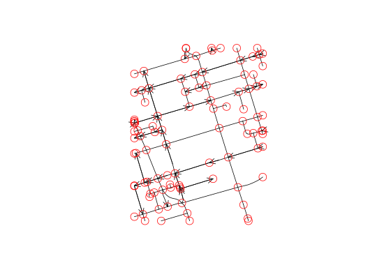

extract method for SpatialNetwork
summary method for SpatialNetwork
spTransform method for SpatialNetwork
As("SpatialNetwork", "SpatialPointsDataFrame")
As("SpatialNetwork", "igraph")
plot method for SpatialNetwork
# S4 method for SpatialNetwork [(x, i, j, ..., drop = TRUE) # S3 method for SpatialNetwork points(x, ..., col = "red", cex = 2) # S4 method for SpatialNetwork summary(object, ...) # S3 method for summary.SpatialNetwork print(x, ...) # S4 method for SpatialNetwork,ANY spTransform(x, CRSobj, ...) # S4 method for SpatialNetwork,missing plot(x, y, ..., arrow_size = 0)
| x | object of class SpatialNetwork |
|---|---|
| i | numeric; Lines to select (and any edges referring to them) |
| j | numeric; graph edges to select (and any Lines they refer to) |
| ... | ignored |
| drop | logical; ignored |
| col | color |
| cex | symbol size |
| object | object of class SpatialNetwork |
| CRSobj | object of class CRS |
| y | ignored |
| arrow_size | numeric; scaling factor for the arrow head |
data(torontocentre) tc = SpatialNetwork(torontocentre, direction = torontocentre$DIRECTION_) library(sp) plot(tc, arrow_size = .5)points(tc)